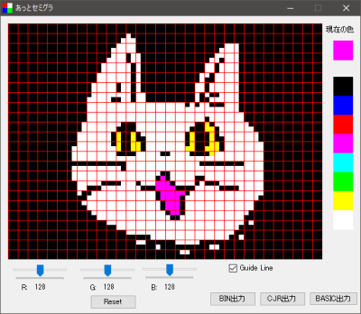

旧称 なんでもセミグラ

「あっとセミグラ」は任意の画像ファイルを JR-200 のセミグラフィックスで表示するための BASIC リスト、CJR データなどを作成するフリーソフトです。
作例については、「セミグラ・グランプリ」を参照してください。
※ このプログラムは十分な検証がされていません。ユーザー環境に有害な影響を与えるようなことはしていないつもりですが、いかなる損害が生じても当方は一切補償しません。了解の上ご利用下さい。
2022.1.8 Version 0.4.1 公開
〇バイナリ https://github.com/find-jr200/atsemigra/releases/download/V0.4.1/atsemigra_041.zip (10KB)
〇ソースコードは github へ
find-jr200/atsemigra (github.com)
※ ダウンロードした atsemigra.exe を実行しようとすると「Windows によって PC が保護されました。」「実行しない」と表示されます。これは実行プログラムに署名がないせいらしいのだが、署名をつけるための諸々をする気はないので、ここは信用してもらって「詳細情報」－「実行」を選んでもらうしかありません。
それがイヤな人はソースコードをダウンロードして、ウィルスがいないことを確認して自分でビルドしてどうぞ。Visual Studio 2015 Community でコンパイルできます。
●履歴
Version 0.3.2 2020.4.12 https://github.com/find-jr200/atsemigra/releases/download/V0.3.2/atsemigra_032.zip (9KB)
Version 0.2.1 2018.12.24 nangra_021.zip (8KB)
Version 0.1.1 2017.4.19
1. 画像ファイル（いろんなフォーマットに対応←適当）をウィンドウにドラッグ＆ドロップ。
2. 調整したければ R, G, B のしきい値を修正。リセットを押すと初期状態（しきい値 128）に戻します。
3. ドット単位で修正したければ適当に修正。ドット修正をした後にしきい値を変えたり、リセットを押すと初期状態に戻るので注意してください。
4. 以下の内容でデータ作成。
「BIN出力」テキストVRAM、アトリビュートVRAMの内容を連結して出力。
「CJR出力」MLOAD するための CJR ファイル作成。
【注意】Ver 1.3.6 までの VJR-200 ではこの CJR を高速ロードすることはできません。Ver 1.3.7 以降で対応しました。
「BASIC出力」クイックタイプ用のテキストファイルを作成。
［TOP PAGE］